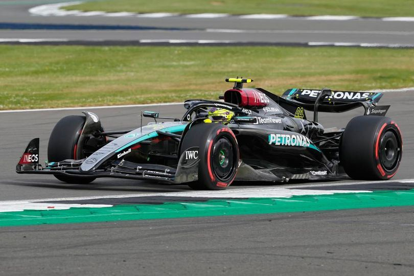

28 November 2024
Isu Global: Ketegangan Amerika Serikat dan China Semakin Memanas
Ketegangan antara Amerika Serikat dan China semakin meningkat setelah AS mengumumkan sanksi terhadap perusahaan teknologi China. Sanksi ini diberlakukan karena tuduhan pengawasan masal yang dilakukan China.
Sebagai tanggapan, China memperkenalkan kebijakan perdagangan yang lebih ketat, menargetkan barang-barang asal AS. Beijing menganggap kebijakan AS sebagai bentuk intervensi terhadap kedaulatannya.
Pemerintah AS menyatakan bahwa sanksi ini bertujuan melindungi hak asasi manusia, terutama dalam masalah kebebasan digital. Sementara itu, China menuduh AS berusaha menghambat kemajuan teknologi mereka.
Analis khawatir, ketegangan ini dapat mempengaruhi ekonomi global dan berisiko memicu konflik terbuka antara kedua negara besar.
28 November 2024
Krisis Ekonomi: Dampak Inflasi Global dan Kenaikan Suku Bunga
Krisis ekonomi global semakin mendalam dengan terus meningkatnya inflasi di berbagai negara. Banyak negara besar, termasuk Amerika Serikat dan negara-negara Eropa, melaporkan lonjakan harga barang dan bahan pokok yang tidak terkendali.
Sebagai respons, bank-bank sentral di seluruh dunia, termasuk Federal Reserve AS dan Bank Sentral Eropa, menaikkan suku bunga untuk menahan inflasi. Namun, langkah ini justru menambah beban bagi banyak pelaku ekonomi, terutama di sektor usaha kecil dan menengah.
Kenaikan suku bunga menyebabkan biaya pinjaman yang lebih tinggi, memperlambat investasi dan konsumsi. Sektor perumahan juga merasakan dampaknya dengan turunnya angka penjualan properti dan meningkatnya angka kredit macet.
Krisis ini tidak hanya berdampak pada negara-negara maju, tetapi juga memengaruhi ekonomi negara-negara berkembang yang sangat bergantung pada impor barang dan bahan baku. Analis memperingatkan bahwa jika situasi ini berlanjut, resesi global mungkin tak terhindarkan.
28 November 2024
Prestasi Atlet Indonesia di Kancah Internasional
Prestasi atlet Indonesia di kancah internasional semakin mencuat, dengan berbagai kemenangan di ajang olahraga dunia. Indonesia telah berhasil meraih medali di berbagai kejuaraan internasional, termasuk Olimpiade, Asian Games, dan kejuaraan dunia di berbagai cabang seperti bulu tangkis, sepak takraw, dan angkat besi.
Bulu tangkis menjadi salah satu cabang yang paling dominan, dengan atlet seperti Anthony Ginting, Greysia Polii, dan Kevin Sanjaya yang telah mengharumkan nama Indonesia melalui kemenangan di turnamen besar seperti All England dan Kejuaraan Dunia. Selain itu, Indonesia juga sukses di cabang angkat besi, dengan atlet seperti Eko Yuli Irawan yang meraih medali di Olimpiade dan kejuaraan dunia.
Keberhasilan ini tidak hanya menunjukkan kemampuan atlet Indonesia, tetapi juga peningkatan dalam pembinaan dan fasilitas olahraga di tanah air. Meskipun masih ada tantangan dalam hal pendanaan dan infrastruktur, prestasi-prestasi ini menunjukkan potensi besar Indonesia di kancah olahraga internasional.
Artikel Terkini

28 November 2024
International
Politik
TNI AU dan Militer Udara Jepang Jalin Kerja Sama di Bidang Intelijen
Baca selengkapnya →

02 Desember 2024
Investasi
Pasar Saham
BRI Tanam 5.000 Bibit Pohon Produktif di Desa Kutuh Bali
Baca selengkapnya →

7 Juli 2024
Formula 1
Balap Mobil
Hasil Balapan Formula 1 GP Inggris 2024: Lewis Hamilton Akhiri Puasa Kemenangan 3 Musim, Kalahkan Max Verstappen
Baca selengkapnya →

10 Desember 2024
lifestyle
Hiburan
Musik
Rekomendasi Konser Musik di Malam Tahun Baru 2025
Baca selengkapnya →
Rekomendasi untuk Anda

Klasemen Liga Champions: Liverpool Teratas, Leverkusen Kedua

Selain Puncak, Ini 7 Tempat Wisata Alam yang Seru Sekitar Jakarta

RI Bakal Punya Bank Emas 2025

Ruben Amorim Belain Andre Onana

Pemprov DKI Jakarta Umumkan UMP Jakarta Tahun 2025 Jadi Rp 5,3 juta